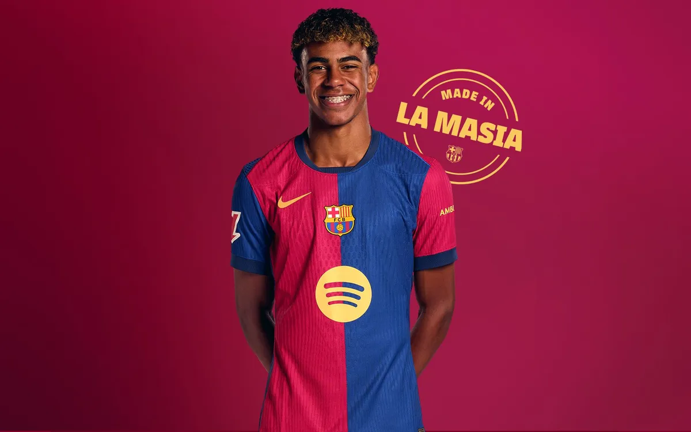

Lamine Yamal – The Teenage Sensation
Full Name: Lamine Yamal Nasraoui Ebana
Date of Birth: July 13, 2007
Nationality: Spanish 🇪🇸
Descent: Moroccan father, Equatorial Guinean mother
Position: Right Winger / Forward
Club: FC Barcelona
National Team: Spain
Jersey Number: 27 (Barcelona), 19 (Spain)
Career Highlights
- Youngest-ever player for FC Barcelona in La Liga (15 years and 9 months)
- Youngest player to score for Spain's national team
- Youngest Spanish player in a major tournament (Euro 2024)
- Played in UEFA Champions League at just 16
- Compared to Lionel Messi for dribbling and vision
Playing Style
- Explosive pace and acceleration
- Excellent left-footed shot
- Tight ball control in small spaces
- Great vision and passing ability
- Very mature decision-making
- Cuts inside from the right wing, like Messi
Quotes
“He’s a player with extraordinary talent and personality.” – Xavi Hernández
“He reminds me of a young Messi.” – Spanish media and fans
Fun Facts
- Joined Barcelona’s academy (La Masia) at a young age
- Idolizes Lionel Messi
- Still goes to school while playing pro football
- Known for being humble off the pitch
- Seen as the future star of Spain and world football

← Back to Football Index